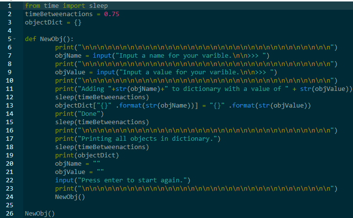
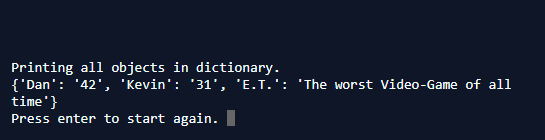

If you are looking for a bit of code that you are having trouble with, or just something fun to mess around with, then this is the place for you. You will see a lot of Python3 and C# code here, and maybe a dash or too of Javascript (Which will be super fun because I can put it into the website! :3
Here is a pretty simple object creation function I created in Python:
It uses the text formatting feature in python to create varibles named and assigned values by the user without changing any of the code. This is a good first step in polymorphic functions/programs. Here is a picture of the output console:
After playing with the function a bit, you can see that 3 user varibles present. After the varibles are created, they could be used for data collection or, as mentioned above, to create a polymorpic script.